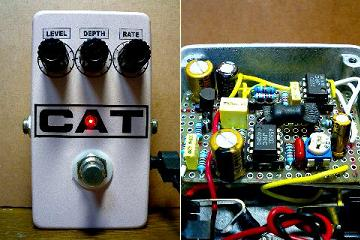
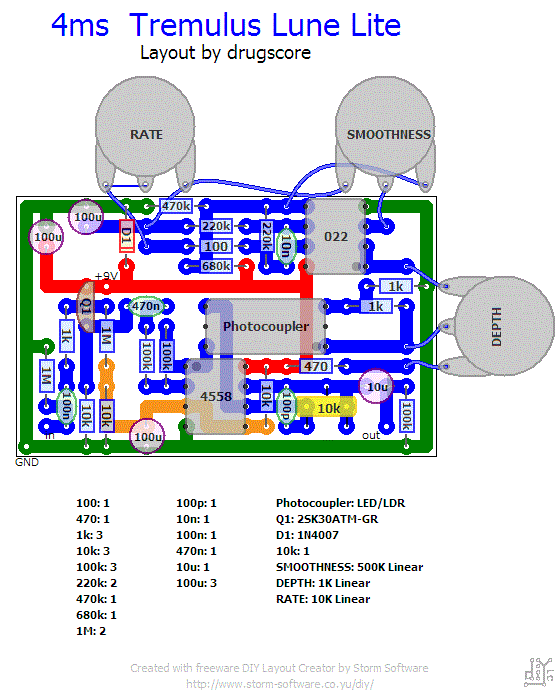
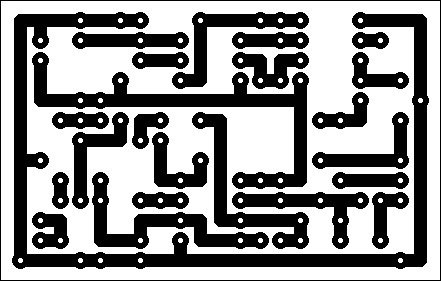

4ms Tremulus Lune改
2009年03月02日 カテゴリー：自作エフェクター（アナログ）

最近揺れモノが多いんですが、次はトレモロです。TONEPADにあるTremulus Luneですが、ポットはRate、Depth、Waveの3つだけにしました。エフェクターの自作とかモディファイというと、ポットを増やしたりスイッチを増やしたりする方が多いですが、私は極力減らす派です（まぁめんどくさがりなだけです）。前にバッファも入れてますが、面倒なので回路は書いてません。
▽回路図
TONEPAD Tremulus Lune プロジェクトファイル ダウンロードページ
▽レイアウト

▽PCB（横55.9mm縦35.6mm）

フォトカプラは自作です。余っていたLEDとCdsを熱収縮チューブでくっつけただけのものです。Fineポットはなし、Spacingポットはソケットで対応しています。
最初はあんまり使わなさそうだなぁと思っていましたが、使ってみるとすごくいいです。シンプルに音量を揺らすだけというのがすばらしい。揺れのスピードを速めにして浅くかけるのがさりげなくていいです。もちろんマシンガンっぽいのもできます。
ケースは黒地に赤と青と白を薄く振り掛けるようにして塗ってみました。写真だとラメが入ってるように見えます。あんまりトレモロっぽくないので他のと移しかえようかな…
---以下2009年4月4日追加---
LEDを高輝度5mmのものから通常の3mmのものに変えました。
やはり音量調整したかったのでLFOの波形を三角波固定にし、出力に100kBのポットを追加しました。そのためトリマーは音量を上げるように設定してます。またRATEポットを5kAに変えました。
ケースをひよこのページ ディストーション改と入れ替えています。色はわかりにくいですがピンクです。